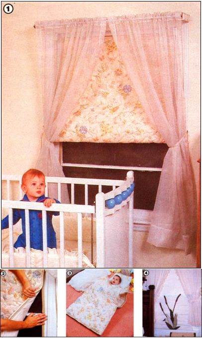

MIKE WESTBROOK AND MOTHER EARTH NEWS STAFF
[1] Homemade thermal window shades can be as decorative as they are functional. When Velcro strips are used as fasteners, the quilted shades can be placed on the windows without interfering with existing drapes or shutters. [2] A close-up view demonstrates how the Velcro strips are placed on the window frame [3] When not needed as a window treatment, this shade becomes a snuggly quilted sleeping bag for the baby. [4] The design variations are limited only by your imagination. Here, a cattail applique dresses up the Westbrooks' bedroom window shade.